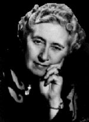

BIOGRAFIA
Nascida Agatha Mary Clarissa Miller em Torquay, condado de Devonshire, Inglaterra, a 15 de setembro de 1890. Filha de uma casal tipicamente vitoriano, mesmo sendo o pai, Frederick Miller, americano, foi criada segundo a melhor tradição européia. Seus pais tudo fizeram para que ela seguisse uma carreira de cantora lírica ou pianista. Mas Agatha Christie preferia passar o tempo escrevendo poemas e contos.
Ela foi educada em casa, onde estudou piano e canto, até que se casou em 1914, com o coronel Archibald Christie, cujo sobrenome adotaria até o final da vida. Quando começa a Primeira Guerra Mundial, ela se alista como voluntária no Exército da Cruz Vermelha. Atuando como enfermeira na Inglaterra, aceita um desafio da irmã: escrever uma história policial em que o leitor não pudesse descobrir a identidade do assassino antes do final da narrativa. Daí surgiu O Misterioso Caso de Styles, que tinha como protagonista um belga chamado Hercule Poirot, inspirado nos vários políticos belgas que se refugiaram na Inglaterra naquela época. Hercule Poirot seria ainda protagonista de uma série de outros livros, se consagrando como um dos maiores detetives já criados. Mas só em 1926 ela conseguiu chamar a atenção do público com O Assassinato de Roger Ackroyd. Algum tempo depois do lançamento deste, Agatha Christie desapareceu misteriosamente. Como em suas histórias, deixou rastros efêmeros, pistas difusas, confundindo toda a polícia inglesa, e provocando sérias suspeitas de estar à procura de promoção de publicidade para uma carreira mal começada.
Em 1930, já divorciada e romancista de sucesso, casa-se novamente. Desta vez com Max Mallowan, arqueólogo, com quem viaja pelo Oriente. É dessas viagens que ela tira inspiração para vários livros de sucesso como: Morte no Nilo, Intriga em Bagdá e outros.
Criou também outros personagens, como Miss Jane Marple, uma simpática velhinha profunda conhecedora da natureza humana, moradora da pequena Saint Mary Mead. A estréia de Miss Marple ocorreu no livro Assassinato na Casa do Pastor.
Seus mais de 80 livros publicados venderam mais de 1 trilhão de cópias em todo o mundo, fazendo de Agatha Christie a maior escritora de romances policiais de todos os tempos. Agatha Christie morreu no dia 12 de Janeiro de 1976 e seu marido 2 anos depois.
Curiosidade: O livro Cai o pano foi escrito em 1940 e publicado em 1975.